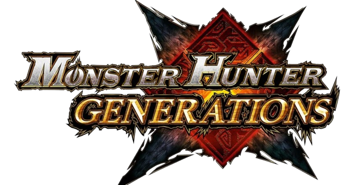
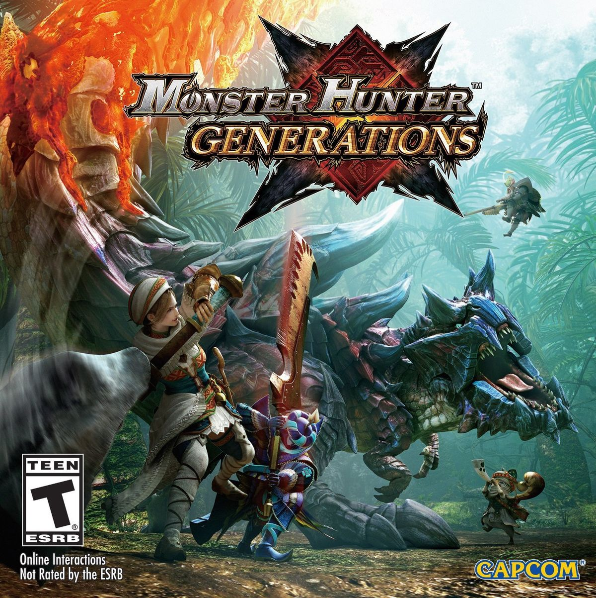

<!DOCTYPE html>
<html>
    <title>Monster Hunter Generations</title>
    <link rel="stylesheet" href="../style.css">
    <link rel="icon" href="../gameImages/mhgLogo.png">
</html>
<body>
    <div>
    <h1></h1>
    <p>Monster Hunter Generations or Monster Hunter X (Japan) is the 2nd Monster Hunter game on the Nintendo 3DS.</p>
    <h1>New features</h1>
    <p>Monster Hunter Generations is the most customizable game, because there every weapon has four hunting styles.</p>
    
    <table>
        <tr>
            <td>Release Dates</td>
            <td>
                <ul>
                    <li>Japan - 28th November 2015</li>
                    <li>North America - 15th July 2016</li>
                    <li>Europe - 15th July 2016</li>
                </ul>
            </td>
        </tr>
        <tr>
            <td>Flagship Monster</td>
            <td>"The Fatal Four" or Astalos, Gammoth, Mizutsune and Glavenus</td>
        </tr>
    </table>
</div>
<footer>
    
    <p>I'm Lukas and am a huge Monster Huner fan and that's why I made my wiki about the game.</p>
</footer>
</body>